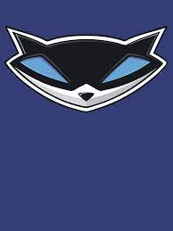

Esse site tem como objetivo principal introduzir você, leitor, ao universo da franquia de jogos Sly Cooper. Dito isso, este site trará diversas informações a respeito da franquia que podem lhe despertar a curiosidade de jogar.
Essa franquia é uma das minhas favoritas devido ao fato de possuir diversos personagens marcantes, uma história envolvente e uma jogabilidade muito divertida.
A franquia é voltada principalmente para 3 amigos que formam uma grande equipe e suas diversas aventuras no mundo dos crimes:
A franquia possui até o momento 4 jogos oficiais. Esta página serve como uma breve introdução ao universo que será detalhado nas demais seções do site. Use o menu ao lado para navegar!
| Informação | Dado |
|---|---|
| Número de jogos principais | 4 |
| Plataformas | PlayStation 2, PlayStation 3, PlayStation Vita |
| Desenvolvedora original | Sucker Punch Productions |
| Desenvolvedora (Sly 4) | Sanzaru Games |
| Ano do primeiro jogo | 2002 |